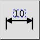

Tilbakestill etikettposisjon
Verktøylinje/ikon:


Meny: Dimensjon > Tilbakestill etikettposisjon
Snarvei: D, S
Kommandoer: dimregen | ds
Verktøylinje/ikon:


Dette verktøyet tilbakestiller etikettposisjonen til alle valgte dimensjonsobjekter og plasserer etiketten tilbake til den automatisk beregnede posisjonen.